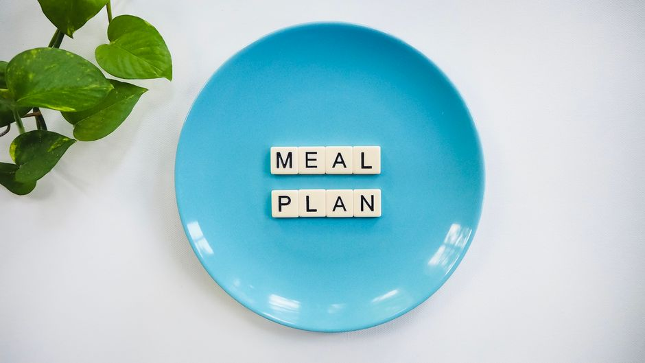

Tips for Cooking in Mass and Reducing Food Costs
Cooking in mass can be an efficient and cost-effective way to manage your food expenses, especially for students on a budget. Here are five concrete tips to help you save money while preparing delicious and nutritious meals for yourself or your dorm mates.

Photo: Vegan Liftz / Pexels
1. Plan Your Meals
Planning your meals for the week in advance is key. Make a shopping list based on your meal plan, which will help you avoid impulse buys and reduce food waste. For instance, if you plan to cook a vegetable stir-fry on Monday, a pasta dish on Wednesday, and a soup on Friday, you can buy the necessary ingredients in bulk at a lower cost. Stick to your list and avoid buying extra items.
2. Buy in Bulk
Purchasing ingredients in bulk can significantly reduce your overall food costs. Look for sales and discounts on staples like rice, pasta, beans, and canned goods. For example, buying 2 kg of lentils instead of 500g can save you a considerable amount of money. Additionally, consider buying frozen vegetables and fruits, which are often cheaper and just as nutritious as fresh ones.
3. Cook with Economical Proteins
Economical proteins like beans, lentils, and chickpeas are excellent choices for reducing food costs. They are not only inexpensive but also versatile and nutritious. For example, you can make a hearty bean chili with just a few ingredients: canned beans, canned tomatoes, onions, and spices. This dish is both filling and affordable, making it perfect for a student living on a budget.
4. Use Frozen Vegetables and Herbs
Frozen vegetables and herbs are often cheaper and just as nutritious as fresh ones. They are also more convenient, as they can be stored for a longer period without going bad. For instance, you can make a simple vegetable curry using frozen mixed vegetables, canned tomatoes, and a few spices. This meal is quick, easy to prepare, and won't break the bank.
5. Cook in Large Batches and Freeze
Cooking in large batches and freezing leftovers can save you money and time in the long run. For example, you can prepare a large pot of soup or chili and portion it out into freezer-safe containers. This way, you can enjoy a warm, comforting meal whenever you want, without having to buy more ingredients. Freeze portions that can last up to 3 months, ensuring that you always have a backup meal on hand.
By following these tips, you can save money on your food expenses while still enjoying delicious and nutritious meals. Planning, buying in bulk, using economical proteins, utilizing frozen ingredients, and cooking in large batches are all effective strategies to keep your food costs down.
Recommended products
As an Amazon Associate, I earn from qualifying purchases.